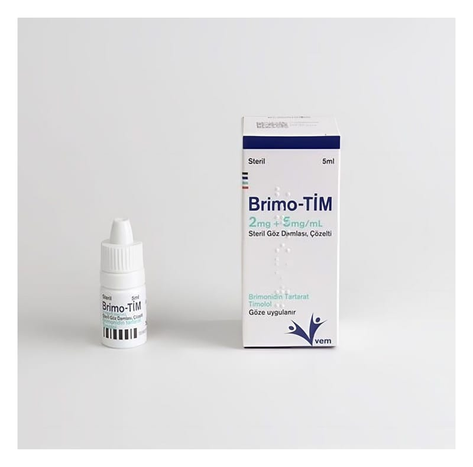

Brimo-Tim 2 mg+5 mg/ml Steril Göz Damlası, Çözelti, 5 ml

Ne için kullanılır
KT · Bölüm 1BRİMO-TİM, etkin madde olarak brimonidin tartarat ve timolol maleat içeren, düşük yoğunluklu polietilen şişe içinde 5 mL çözelti olarak kullanıma sunulmuş bir göz damlasıdır. BRİMO-TİM, göziçi basıncı (göz tansiyonu) yüksekliği ve görme bozukluğu ile seyreden hastalığı kontrol etmek için kullanılan bir göz damlasıdır.
BRİMO-TİM’in bileşimindeki iki etkin madde olan brimonidin tartarat ve timolol maleat kombinasyonu tamamlayıcı etki mekanizmalarıyla yüksek göz içi basıncını düşürmektedirler ve kombine etkileri, iki bileşiğin tek tek uygulanmalarına kıyasla ilave göz içi basıncı azalmasıyla sonuçlanmaktadır. BRİMO-TİM, göz tansiyonunu düşüren diğer bazı ilaçlara yeterli yanıt vermeyen hastalarda göz içi basıncını düşürmek için kullanılır.
Gözlerinizde, gözün iç kısmını besleyen berrak, suya benzer bir sıvı bulunmaktadır. Sıvı sürekli olarak gözden boşaltılır ve bunun yerine yeni sıvı yapılır. Sıvının yeterince hızlı boşaltılamadığı veya fazla yapıldığı durumda, gözdeki basınç artar ve sonuçta bu durum görmenizde hasar oluşturur. BRİMO-TİM, sıvı üretimini azaltarak ve boşaltılan sıvının miktarını artırarak etki gösterir. Bu süreç gözün içindeki basıncı düşürürken gözü beslemeye devam eder.